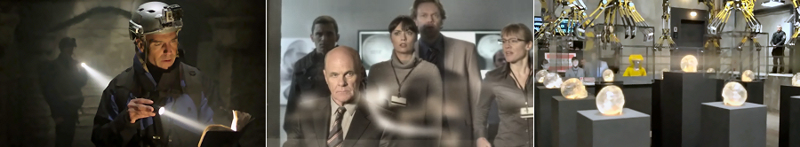

Crystal Skulls, a low-budget science fiction mystery film by Bulgarian director Todor Chapkanov, builds its premise on Crystal Skulls, real-life sculptures in shape of human skull made of clear quartz (a.k.a. ‘rock crystal’), claimed to be genuine pre-Columbian Mesoamerican artefacts by their alleged finders and usually attributed to the ancient Aztec or Maya civilizations (however, none of the specimens made available for scientific study have been authenticated as pre-Columbian in origin).
Hired gun Mitchell (Sam Redford) works for William Hadden (David Rintoul), an eccentric billionaire who collects the legendary Crystal Skulls in order to tap into their mysterious powers. His quest takes him to many exotic places, and he doesn’t hesitate to use whatever means necessary to obtain the enigmatic artefacts for his employer. Eventually, Hadden has in his possession all thirteen Crystal Skulls and lines them up on pedestals at his Vienna headquarters with the intention to unleash their supernatural powers. The skulls connect and emit a powerful electromagnetic pulse, knocking out all the city lights and communications. Alas, it transpires that one of the skulls acquired by Mitchell is a fake. The remaining twelve skulls go to some sort of an uncontrolled chain reaction, periodically emitting ever more powerful electromagnetic pulses and (wait for it) instantaneously evaporating anybody who enters the room and dares to try stopping the reaction.
Hadden concludes that the key is the missing, thirteenth skull, which is now the only thing that can restore the order, and control the remaining skulls, before the whole Earth is destroyed by their unrelenting force. He enlists services of college-professor-cum-pound-shop-Indiana-Jones John Winston (Richard Burgi) to find the 13th skull, restore the balance and prevent destruction of the Earth.

Silly plot and bad acting aside, the film features some of the worst examples of CGI that I’ve seen to date. The laughable ‘special effects’ of the plane flying through the clouds remind something that wouldn’t be out of place in the cinema of the 1960s. There are some excellent low-budget sci-fi movies coming out recently, but Crystal Skulls is definitely not one of them.
TRIVIA: The detailed examination of the skulls revealed that they show traces of polishing and abrasion by modern tools and were probably carved in the late 19th / early 20th century.